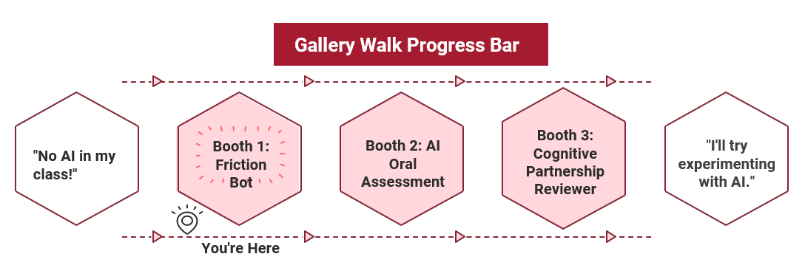

Productive Struggle and AI: Designing a Canvas Module for Faculty
Project Overview
As part of the LEAP (Learning Exploration and AI Pedagogy) initiative at HGSE, I co-designed a four-session asynchronous Canvas module to help faculty build confidence integrating AI into their teaching — with a focus on preserving the kind of productive struggle that makes learning stick.
Low faculty attendance at LEAP's synchronous AI workshops pointed to a structural gap: faculty needed a flexible, self-paced alternative. Working with two other learning designers, I helped create an asynchronous Canvas module as a supplementary pathway for faculty at different stages of AI adoption.
The module's theme — "productive struggle and AI" — emerged from listening tours and faculty interviews, where we heard both caution and curiosity about AI's impact on student learning. This topic was intentionally chosen because it meets faculty where they are: whether skeptical or already experimenting, the question of what kinds of struggle are worth preserving is one every educator has an instinct about.
Using ADDIE and backward design, we defined clear learning outcomes first, then built content, activities, and formative assessments to serve those outcomes. We applied UDL and accessibility principles throughout: multiple modes of engagement (short readings, video explainers, and interactive scenarios), alternative text for all media, and keyboard-accessible navigation.
Status
The pilot module is currently under evaluation. Early analytics and feedback indicate [to be updated after gallery walk]. Insights from this pilot are informing future iterations of LEAP's online offerings.
Learning Goals
I developed the learning objectives using the revised Bloom's Taxonomy (Bloom, 2001), anchoring each outcome to a specific cognitive level to ensure the module builds toward genuine transfer rather than surface familiarity.
- Learners will be able to define "productive struggle" and explain its relevance in AI-enabled learning environments.
- Learners will be able to differentiate between types of student struggle that should be preserved or extended with AI and those that can be reduced or removed.
- Learners will be able to analyze different types of AI tools and determine how they can support productive struggle for their students.
- Learners will be able to develop a personal AI adoption plan that outlines specific strategies for exploring, piloting, and integrating AI tools into their existing course structures.
Design Decisions
1. Starting by addressing emotional challenges
In the analysis stage, our listening sessions with faculty revealed strong emotional barriers to using AI, including fear of replacement, concerns about authenticity, and worries about threats to human interaction. To address these valid concerns, we deliberately began the module by creating psychological safety rather than jumping straight into tools.
We drew on the SCARF model (Status, Certainty, Autonomy, Relatedness, Fairness) to frame AI in ways that acknowledged faculty fears, emphasized their continued professional value, and highlighted AI as a support rather than a replacement. This helped faculty feel heard and more willing to engage in a more technical exploration of research and tools related to productive struggle.
We used a similar approach in the disclaimer preceding the AI tool introduction. In pilot sessions, faculty reported that this messaging resonated with them and reduced defensiveness, making them more open and rational in considering AI's role in their teaching.
2. Creative Design Idea - Gallery Walk
I was primarily responsible for designing the tool introduction and explaining how the tools work and how faculty might apply them in their own teaching contexts.
Inspired by the concept of a gallery walk, I created a "touring" experience within the module, supported by a tracking progress bar. I designed this element in Canva and imported it into the Canvas page. This element served to:
- Engage learners by giving a sense of movement and exploration through different AI tools.
- Help faculty navigate the content and know where they were in the journey.
- Prompt reflection on their changing attitudes toward AI as they progressed through the module.

A broken link that broke the whole layout
I encountered an issue where a broken link disrupted the pre-set formatting and caused inconsistencies in the page layout across the Canvas module.
To diagnose the problem, I reviewed the code directly in the editor and compared it side-by-side with a correctly functioning page — tracing where the formatting diverged and what was triggering the cascade.

Trying everything — then knowing when to escalate
I first attempted to resolve the issue by adjusting settings within the Cidi Labs DesignPlus extension. Those changes were unsuccessful — the formatting inconsistencies persisted.
Rather than continuing to troubleshoot in isolation, I escalated to Canvas IT support and collaborated with them to dig deeper into the root cause.
Turning a bug into a better course
Through the troubleshooting process, I gained access to advanced tools I wouldn't have otherwise explored. I implemented improvements that went beyond the original fix — enhancing the overall visual consistency and design quality of the course.
What started as a broken link became an opportunity to level up the module's polish and my own technical fluency with Canvas.

Course Components
Measuring effectiveness: pre- and post-survey
To evaluate the effectiveness of the module, I designed a pre- and post-survey focused on changes in faculty attitudes, confidence, and intentions around using AI to support productive struggle.
The survey included Likert-scale items measuring:
- Understanding of "productive struggle" in AI-enabled learning environments
- Ability to distinguish between struggles that should be preserved vs. reduced with AI
- Confidence in selecting and integrating AI tools into existing course structures
- Likelihood of using AI tools in their teaching in the next term
I also included open-ended questions about their main concerns before the module and one concrete way they planned to adjust an assignment or activity after completing it.
Our expectation was that, from pre to post, faculty would shift from "unlikely" or "unsure" toward "likely" or "very likely" to adopt AI tools, alongside increases in self-reported understanding and confidence. These data will inform future iterations of both the module content and LEAP's broader offerings.

Interactive Elements
A check-in quiz built as an interactive scenario, giving faculty a low-stakes moment to reflect on their learning before moving to the next booth.